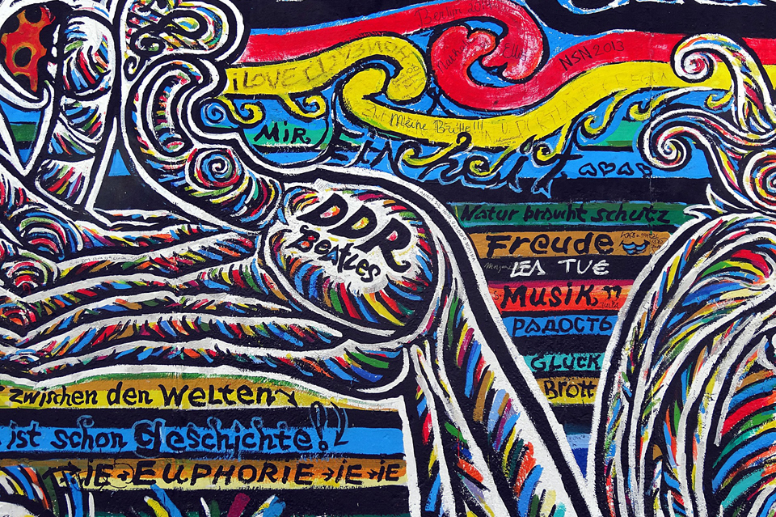

"Art should comfort the disturbed and disturb the comfort"
Bansky
L'actu du moment
Urban Art Fair 2022
Publié le

La cinquième édition aura lieu au Carreau du temple du 20 au 23 septembre 2020. L'occasion de faire de belles découvertes ou d'admirer les oeuvres d'artistes incontournables.
L’innovation de cette foire est la pluralité des événements qui en découle. Pour l’occasion, le Carreau du Temple réitère les projections cinématographiques autour du street art.
Cette année la foire se déplace aussi hors les murs avec la présentation inédite de l’exposition « Cannot be Bo(a)rdered » à découvrir en entrée libre du septembre au 7 novembre 2020 à l’Espace Commines. Une trentaine d’artistes venus de Singapour, Malaise et Indonésie on mis en place cette exposition autour de la culture du skate board.
A contexte exceptionnel, moyens exceptionnels. Emmaüs International a fait appel à la Galerie d’art en ligne KAZoART. Plus de 60 Street artistes se sont mobilisés, dont des artistes qui suivent le mouvement Emmaüs depuis de nombreuses années.
Artistes renommés ou émergents, tous ont accepté de faire don d’une ou plusieurs de leurs oeuvres au profit d’une grande Vente Solidaire de Street Art, qui se déroulera en ligne sur KAZoART, à compter du 12 juin 2020.
Les bénéfices de cette vente solidaire seront intégralement reversés au fonds d’urgence d’Emmaüs International, réparti entre les communautés d’Emmaüs du monde entier en fonction de leurs besoins.
Reconnaissable entre mille grâce à son univers hypnotique, le street artiste Geleb a bien voulu répondre à mes questions.
Influencé par ses origines tahitiennes, il y a vécu lorsqu'il était plus jeune. Ces graphs sont comme des souvenirs qui ont fait naître des formes et des motifs qui rappellent l'art primitif ou premier.
Rencontre avec Joris, artiste peintre autodidacte et diplômé des Beaux Arts, vivant et travaillant à Paris.
Le jeune homme aime transmettre sa passion pour le graffiti. Il donne d'ailleurs des cours d’initiation, et fait aussi des prestations de live painting ou du team building pour des groupes. Il aime apprendre aux autres à s’exprimer et en a fait son métier.